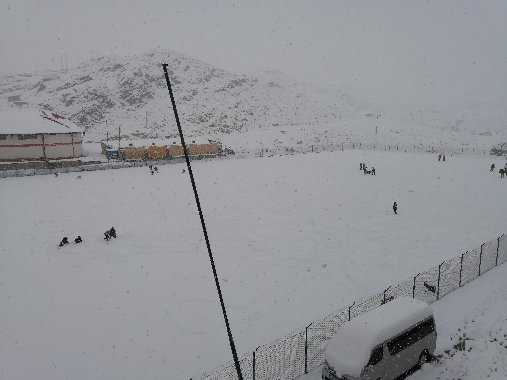

Ciudad de Porco
ciudad Fig.1
Porco es una ciudad minera que es en principal fuente de producción, posee un hospital, un kinder, dos escuelas y un colegio como sus principales estructuras. Tambien poseé varios lugares turísticos y costumbres que al dia de hoy son llevados a cabó.
representación del baile del condór Fig.2
La mineria en Porco es tan importante, que la ciudad lleva el título de primer centro minero de Bolivia y que es posiblemente lugar donde partio Diego Huallpa quien descubrió el cerro Ríco de Potosí, pero esto también tubo sus problemas, la mayoria de los jovenes entre 16-19 años empiezan a trabajar en la mineria, el cual tiene altos riesgos de muerte y de enfermedades pulmonares.
horno español Fig.3
El "Horno de los Españoles" es conocido por todos los porqueños que habitan en la ciudad, y el cual ésta ubicada en la misma cuidad a solo unas cuadras de la plaza central. Se dice que es aqui donde fundian los minerales extraidos de las minas de Porco, algunos otros bromistas dicen que aqui se hacia pan. Al igual que el horno español existen varios otros sitios de la américa precolonial, ejem: los primeros centros mineros de Porco, pinturas rupestres, vacijas de los antiguos pueblos quechua, un museo, las minas donde se haya el "Tío de la mina", varias leyendas que estan en su conjunto relacionadas con la mina de Potosí, entre otros.
